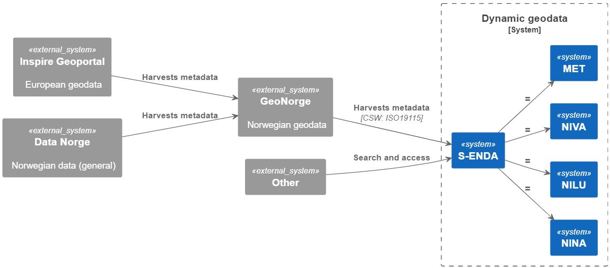

Introduction
This document describes general data management practices in line with the FAIR (Findable, Accessible, Interoperable and Reusable) guiding principles for scientific data management, and focuses on the management and sharing of dynamical geodata (i.e., geolocated data about processes in nature). The practices aim at a metadata-driven data management regime. The primary focus of this handbook is on management of dynamic geodata. It provides a synopsis of the general data management practices of S-ENDA partners. We have prepared an overview for organisation specific information that can be updated and merged into the general handbook by the user organisations.
The purpose of the Data Management Handbook (DMH) is threefold:
- to provide an overview of the principles for FAIR data management to be employed;
- to help personnel identify their roles and responsibilities for good data management; and
- to provide personnel with practical guidelines for carrying out good data management.
The intended audience for this DMH is any personnel involved in the process of making data available for the end user. This process can be viewed as a value chain that moves from the producer of the data to the data consumer (i.e., the end user). The handbook provides description and summary of data management principles. Details of the practical implementation of the principles are described along 4 pillars: structuring and documenting data; data services; user portals and documentation; and data governance. Practical guidance for data producers is also provided.
The DMH is a strategic governing document and should be used as part of the quality framework the organisation is using.
The S-ENDA partners:
- Norwegian Meteorological Institute (Meteorologisk institutt - MET)
- Norwegian Institute for Air Research (Norsk institutt for luftforskning - NILU)
- Norwegian Institute for Nature Research (Norsk institutt for naturforskning - NINA)
- Norwegian Institute for Water Research (Norsk institutt for vannforskning - NIVA)
About S-ENDA
S-ENDA is part of a larger effort within the national geodata strategy (“Alt skjer et sted”), and relates to this strategy through GeoNorge, which is developed and operated by the Norwegian Mapping Authority (“Kartverket”). GeoNorge, in turn, relates to the European INSPIRE Geoportal through the Inspire directive. In particular, S-ENDA is responsible for Action 20 of the Norwegian geodata strategy. The goal of Action 20 is to establish a distributed, virtual data center for use and management of dynamic geodata. S-ENDA’s vision is that everyone, from professional users to the general public, should have easy, secure and stable access to dynamic geodata.
The vision of S-ENDA and the goal of Action 20 are aligned with international guidelines, in particular the FAIR Guiding Principles for scientific data management and stewardship. S-ENDA in a national and international context
Dynamic geodata is weather, environment and climate-related data that changes in space and time and is thus descriptive of processes in nature. Examples are weather observations, weather forecasts, pollution (environmental toxins) in water, air and sea, information on the drift of cod eggs and salmon lice, water flow in rivers, driving conditions on the roads and the distribution of sea ice. Dynamic geodata provides important constraints for many decision-making processes and activities in society.
GeoNorge is the national website for map data and other location information in Norway. Here, users of map data can search and access such information. Dynamic geodata is one such information type. S-ENDA extends GeoNorge by taking responsibility for harmonising the management of dynamic geodata in a consistent manner.

FAIR
The FAIR guiding principles for scientific data management illustrate the best practice for sharing open data. They were first set out in the 2016 paper The FAIR Guiding Principles for scientific data management and stewardship. The principles emphasise machine-actionability (i.e., the capacity of computational systems to find, access, interoperate, and reuse data with none or minimal human intervention) because humans increasingly rely on computational support to deal with data as a result of the increase in volume, complexity, and creation speed of data.
| Initials | Description |
|---|---|
| Findable | The first step in (re)using data is to find them. Metadata and data should be easy to find for both humans and computers. This includes unique and persistent identifiers, rich metadata and that the (meta)data is registered in a searchable resource. |
| Accessible | Once the user finds the required data, they need to know how they can be accessed. This includes using a standarised communications protocol and where necessary authentication and authorisation. |
| Interoperable | The data usually need to be integrated with other data. In addition, the data need to interoperate with applications or workflows for analysis, storage, and processing. This includes FAIR vocabularies. |
| Reusable | The ultimate goal of FAIR is to optimise the reuse of data. To achieve this, metadata and data should be well-described so that they can be replicated and/or combined in different settings. This includes accurate and relevant attributes, data usage license, detailed provenance and meeting domain-relevant community standards. |
FAIR in S-ENDA and GeoNorge
All metadata and datasets that the S-ENDA project delivers to Geonorge is assessed through FAIR-indicators. The status of various datasets' fulfillment of the FAIR principles as well as other requirements from the national geographic infrastructure can bee seen in the Mareano status register. This status register is a first version and will be improved over time. Assessment is done for each of the four main groups in FAIR and it is possible to achieve 100% for each of the letters (F-A-I-R). The method is based on the same implementation that is used in national and European portals for open data, but criteria are closely linked to requirements from the national infrastructure for geographic information especially in terms of accessibility (A) and interoperability (I).
The Guide - FAIR for extended use of geographical information is used as a guideline for the development of automated FAIR assessment of data in Geonorge - the national portal for geographical data, www.geonorge.no.
Data governance
Purpose
Data governance is a data management concept that ensures the availability, usability, integrity, and security of organisational data. It also establishes rules and procedures to ensure data security and compliance thoughout the data life cycle. This chapter explains how we organize and direct data management efforts to ensure that:
-
Data guidelines are implemented throughout the organisation;
-
Data management practices are in line with and contribute to the institute’s strategic aims;
-
The data management regime is reviewed and updated accordingly.
S-ENDA partners have a commitment to integrate FAIR data governance practices into geodata frameworks.
Data life cycle management
Data life cycle management is steered by documentation describing how data generated or used in an activity will be handled throughout the lifetime of the activity and after the activity has been completed. This is living documentation that follows the activity and specifies what kind of data will be generated or acquired, how the data will be described, where the data will be stored, whether and how the data can be shared, and how the data will be retired (archived or deleted). The purpose of life cycle management is to safeguard the data, not just during their “active” period but also for future reuse of the data, and to facilitate cost-effective data handling.
This DMH recommends the following concepts of life cycle management to be implemented:
-
An institution specific Data Management Handbook (MET has a common template available here);
-
Extended discovery metadata for data in internal production chains (these are metadata elements that provide the necessary information for life cycle management just described);
-
A Data Management Plan (DMP) document.
The goal is that life cycle management information shall be readily available for every dataset managed by the institute.
Data Management Plan
A Data Management Plan (DMP) is a document that outlines how the data life cycle management will be conducted for datasets utilized and generated in specific projects. Typically, these are externally financed projects for which such documentation is required by funding agencies.
The Research Council (Norges forskningsråd - NFR) has implemented guidelines mandating publicly accesible DMPs from its funded projects. For more details on NFR's guidelines regarding the contents of a DMP, click here for more information regarding NFR's guidelines for the contents of a DMP. We recommend adhering to these guidelines for any data management project.
While larger internal projects covering many datasets might benefit from a dedicated document of this nature, generally writing formal DMPs for the various datasets is not cost-effective. In such cases it is more appropriate to employ metadata to steer data handling processes (metadata-steered data management) and thereby automate as much of those processes as possible.
Examples of DMP services:
1 The institute has used or uses the service
Example of a Data Management Plan Template
EasyDMP, as an example, is a web tool designed to facilitate and standardize the creation of Data Management Plan (DMP) documents. It can be customized according to specific governance requirements by each institution. It provides a list of questions to be answered by the person responsible for providing the DMP.
An EasyDMP template is divided into sections:
- Data Summary -> A general introduction about data types, sources, quantity, targets, context.
- FAIR Data -> Expanding on Findability, Accessibility, Interoperability, Reusability.
- Allocations of Resources -> Infrastructures, funding, responsible persons.
- Data Security -> Does the data require specific restrictions or limited access?
- Ethical Aspects -> Any special consideration about the specific ethical implications related to data?
- Other -> Any additional information not covered before.
Data Structure and Documentation
Structuring and documenting dynamic geodata shared by multiple providers (S-ENDA partners) is essential to ensure that data is findable, understandable reusable and interoperable. Data need to be structured, encoded, and delivered in agreed formats, documented with rich and standard metadata, and supported by standardized vocabularies. Both discovery metadata and use metadata are exposed in a centralized catalog, harvesting metadata from original sources by standard protocols and automated procedures. An essential prerequisite for structuring and documenting data is the specification of the dataset(s). The dataset is the basic building block of the data management models adopted in the S-ENDA context.
This chapter provides explanations of central elements, such as datasets, metadata, and vocabulary. Each subchapter goes more into detail on the requirements on the FAIR guiding principles and lastly you can read more about the institute spesific data structures. An overall description of FAIR principles is given in the previous chapter FAIR.
Dataset
Datasets form the building block of any data management model. Dataset specification is the first step in structuring data for efficient management. A dataset is a collection of data. Typically, a dataset represents a number of variables in time and space. Datasets may be categorised by:
- Source, such as observations (in situ, remotely sensed) and numerical model projections and analyses;
- Processing level, such as "raw data", calibrated data, quality-controlled data, derived parameters, temporally and/or spatially aggregated variabled;
- Data type, including point data, sections and profiles, lines and polylines, polygons, gridded data, volume data, and time series (of points, grids etc.).
Data having all of the same characteristics in each category, but different independent variable ranges and/or responding to a specific need, are normally considered part of a single dataset. In the context of data preservation a dataset consists of the data records and their associated knowledge (information, tools).
In order to best serve the data through web services, the following principles are useful for guiding the dataset definition:
- A dataset can be a collection of variables stored in, for example, a relational database or as flat files;
- A dataset is defined as a number of spatial and/or temporal variables;
- A dataset should be defined by the information content and not the production method;
- A good dataset does not mix feature types, i.e., trajectories and gridded data should not be present in the same dataset.
In order to support the FAIR principles, the following guidelines must apply to datasets:
- Be assigned a globally unique and persistent identifier.
- Be described with rich metadata.
- Be registered or indexed in a searchable resource.
- Be retrievable by their identifier using a standardised communications protocol, which is open, free, universally implementable and allows for authentication where necessary.
- Be released with a clear and accessible data usage license.
- Be associated with detailed provenance.
- Use a vocabulary that follows FAIR principles.
Metadata
Metadata is a broad concept. It provides descriptive, structural, or administrative information about data, facilitating its identification, management, understanding, and use. Metadata is essential for organizing, finding, and understanding the context of data.
In our data management model the term "metadata" is used in several contexts, specifically the five categories: discovery, use, site, configuration, and system metadata.
In order to support the FAIR principles, the following guidelines must apply to metadata:
- Metadata must be self-explanatory and not need additional information.
- Metadata must include the data identifier clearly and explicitly.
- Metadata must document the quality of data.
- Metadata must be registered or indexed in a searchable resource.
- Clearly identify the data owner.
- Include the data identifier clearly and explicitly.
- Use a vocabulary that follows FAIR principles
- Be accessible even when the data are no longer available.
Metadata types
| Type | Purpose | Description | Examples |
|---|---|---|---|
| Discovery metadata | Used to find relevant data | Discovery metadata are also called index metadata and are a digital version of the library index card. They describe who did what, where and when, how to access data and potential constraints on the data. They shall also link to further information on the data, such as site metadata. | ISO 19115; GCMD/DIF |
| Use metadata | Used to understand data found | Use metadata describes the actual content of a dataset and how it is encoded. The purpose is to enable the user to understand the data without any further communication. They describe the content of variables using standardised vocabularies, units of variables, encoding of missing values, map projections, etc. | Climate and Forecast (CF) Convention; BUFR; GRIB |
| Site metadata | Used to understand data found | Site metadata are used to describe the context of observational data. They describe the location of an observation, the instrumentation, procedures, etc. To a certain extent they overlap with discovery metadata, but also extend discovery metadata. Site metadata can be used for observation network design. Site metadata can be considered a type of use metadata. | WIGOS; OGC O&M |
| Configuration metadata | Used to tune portal services for datasets intended for data consumers (e.g., WMS) | Configuration metadata are used to improve the services offered through a portal to the user community. This can, e.g., be how to best visualise a product. | |
| System metadata | Used to understand the technical structure of the data management system and track changes in it | System metadata covers, e.g., technical details of the storage system, web services, their purpose and how they interact with other components of the data management system, available and consumed storage, number of users and other KPI elements etc. |
Vocabulary
An important part of ensuring the FAIRness of the data is to adopt standardized and controlled vocabularies to describe the data and metadata. Controlled vocabularies are controlled lists of terms used to organize information. They require the use of predefined terms to ensure consistency and accuracy in documenting data for easy dataset discovery. The vocabularies themselves shall also follow the FAIR principles, highlighted by the I2 (Interoperability 2) principle. In practice, this means that vocabularies should ideally be:
- Findable -> registered (indexed, listed) in a vocabulary service
- Accessible -> available on the web, downloadable
- Interoperable -> encoded in a standard representation, such as the Web Ontology Language (OWL) or Simple Knowledge Organization System (SKOS) and domain-specific extensions
- Reusable -> licensed and maintained, ideally with an open license (Source: FAIR vocabularies)
The formalised vocabularies agreed upon during the project aim to facilitate data search in ADC portal across S-ENDA partner data centres. Ideally, each institute provides FAIR compliant machine-to-machine access point to harvest vocabularies, enabling mapping of internal vocabulary to common reference vocabulary (e.g. REST API or SPARQL endpoints for vocabulary servers).
The table below shows the current domain-specific reference vocabularies together with vocabulary servers for each institute.
| Institute | Domain-specific reference vocabularies | Vocabulary server |
|---|---|---|
| MET | CF Standard Names, GCMD Science Keywords | METNO Vocabulary Service |
| NILU | CF Standard Names | ACTRIS Vocabulary |
| NINA | GEMET, EnvThes | Under development |
| NIVA | CF Standard Names, GCMD Science Keywords | Under development |
MET Norway
Current practice
There are essentially two types of dynamical geodata at MET Norway: gridded data and non-gridded data.
Gridded data
Gridded data include numerical and statistical model output and many satellite-derived datasets. MET Norway employs NetCDF/CF as the primary method for structuring gridded data. For documentation, CF-compliance ensures the availability of adequate use metadata in each file...
WMO membership obliges the institute to provide and handle GRIB files; this is done for several datasets, but GRIB does not provide use or discovery metadata in itself.
Non-gridded data
Non-gridded data include most observational data like observations at weather stations, radiosondes, CTD profiles in the ocean, etc. These diverse data types are maintained in many different solutions, ranging from files (e.g. weather station observations extracted from WMO GTS in WMO BUFR format and subsequently converted to NetCDF/CF for easier usage) or DBMS solutions (e.g., the institute’s weather station climate data storage). Software (frost2nc) for conversion of output from the climate data storage to NetCDF/CF for user consumption is available for some stations...
The WMO standard for observations is BUFR, which is also supported but is not self-describing. The institute also maintains other types of data, like textual representations of the weather forecast. Most of these are currently not in any standard format, a notable exception being newly available warnings in CAP format, which is a WMO/OASIS standard format.
NILU
Current practice
NILU handles several types of data, whereas one of the main ones is point in-situ measurements. More information and publicly available data can be found here: Open data.
Time series data
Typical EBAS time series of point in-situ measurements are submitted from many different data sources around the globe in the EBAS Nasa Ames format. The EBAS database (EABS core consisting of software and relational database) is used to quality control and long term store the data. For data dissemination, harmonised secondary datasets in the NetCDF format are generated and served via a THREDDS Data Server (TDS) using THREDDS catalog protocol, ISO metadata and data access through OPeNDAP and http NetCDF download. Metadata for those data are harvested by Met.no for the NorDataNet project.
Gridded data
A set of gridded deposition data for Norway is generated, stored as NetCDF files and published on a THREDDS Data server in the S-ENDA project. The additional use of the WMS protocol for data access facilitates the visualisation of the 2D dataset.
NIVA
Current practice
Data are usually stored in databases like oracle or for newer dataflows in postgresql. Some of this data is publicly available through aquamonitor or for visualization using superset.
Time Series
Loggers are a large source of time series data at NIVA and stored in a DBMS solution. Some of the data is shared with partners using a REST-API. For public access NIVA can share timeseries using OPeNDAP and the C&F convention.
Trajectories
Sensors placed onboard ships, ferryboxes, are typical trajectories sampled by NIVA. For trajectories, metadata is stored in a NoSQL solution, while data is stored in a postgresql database following an internal schema. A REST-API is used to share data upon request, while an internal approval process is used before publishing data for public access. When published, data can be shared through OPeNDAP and following the C&F convention.
NINA
Current practice
Data is stored in multiple formats and structures such as databases, tabular files, geospatial, gridded, and images.
Species observation
One of the main type of data is the point observation of species, delivered in the darwin core standard. Sampling of genetic material in nature converges into huge databases of biodiversity genetic data.
Time series
Automated positioning of individuals by gps devices results in Spatial animal movement data. Regular surveying of the same variables in same locations results in time series of biodiversity data.
Data management
“Good data management is not a goal in itself, but rather is the key conduit leading to knowledge discovery and innovation, and to subsequent data and knowledge integration and reuse by the community after the data publication process. “
– Wilkinson, M., Dumontier, M., Aalbersberg, I. et al. The FAIR Guiding Principles for scientific data management and stewardship 1. Sci Data 3, 160018 (2016).
Data management is the term used to describe the handling of data in a systematic and cost-effective manner. The data management regime should be continuously evolving, to reflect the evolving nature of data collection.
Data is processed and interpreted to generate knowledge (e.g., about the weather) for end users. The knowledge can be presented as information in the form of actual data, illustrations, text or other forms of communication. In this context, an illustration is a representation of data, whereas data means the numerical values needed to analyse and interpret a natural process (i.e., calibrated or with calibration information; it must be possible to understand the meaning of the numerical value from the available and machine-readable information).
Advanced users typically consume some type of data in order to process and interpret it, and produce new knowledge, e.g., in the form of a new dataset or other information. The datasets can be organised in different levels, such as the WMO WIGOS definition for levels of data. Less advanced users apply information based on data (e.g., an illustration) to make decisions (e.g., clothing adapted to the forecast weather).
Between the data providers and data consumers are the processes that manage and deliver the datasets (Figure 1). A number of human roles may be defined with responsibilities that, together, ensure that these processes are carried out in accordance with the data management requirements of the organisation. The definition and filling of these roles depend heavily on the particular organisation, and each organisation must devise its own best solution.

Figure 1. Value chain for data
All the S-ENDA partners work to integrate the FAIR Guiding Principles for scientific data management into their routines, and in this chapter we outline some of the differences in the institute specific data management practices, the S-ENDA architecture, datasets the S-ENDA partners have agreed to deliver and a list relevant personnel at each of the partners.
Data management at MET Norway
At MET Norway, data have always been managed, albeit in a rather narrow technical sense. The main focus has been on storage, primarily for operational data. More recently, the issues of delivering, sharing and reusing data have steadily gained prominence. Still, the legacy of data storage systems built up over many years is an important factor in any uniform data management program.
During the International Polar Year (IPY), MET Norway was the international coordinator for operational data. IPY data management was based on the principle of distributed data management through exchange of standardised descriptions of datasets between contributing data centres.
At the global level, the institute is the primary representative for Norway in the WMO. WMO has in recent years reorganised its approach to documenting and sharing data through two major activities: WIS and WIGOS. Both are metadata-driven activities that follow the same principles as Geonorge and INSPIRE, although there are differences concerning standards required.
Data management at NIVA
NIVA works with complex data of many:
- Types: biological, ecological, physical, chemical
- Matrices: water, sediment, biota
- Sampling methods: sensors/loggers, FerryBox, manual sampling
- Data structures: time series along transect or in fixed position, classic stations, etc.
- Environments: rivers, lakes, marine open water, etc.
The complexity of NIVA’s data has been shown to be a challenge when it comes to overall data sharing. Nevertheless, much of our data is available in several data portals such as Vannmiljø, Artsdatabanken, and ICES, and NIVA is actively working on making its data more findable and interoperable. We are a partner in many EU projects and data management responsible for some (e.g. PAPILLONS).
Data management at NILU
NILU is one of Europe’s leading institutions for storage of data on atmospheric composition. At present, NILUs thematic databases collects, organizes and makes available data on behalf of, among others, the UN, the World Meteorological Organization (WMO), several European research infrastructures and the European Space Agency (ESA). The information gathered in these databases is openly available and free of charge to anyone who wants access to atmospheric research data, and can be accessed through several data portals such as EBAS, EVDC and ACTRIS.
More about the storage of such data at NILU can be found here: Open data.
Furthermore, NILU monitors data for the following areas in Norway:
- Airborne transport, including environmental contaminants
- Climate
- Ozone layer and UV
NILU’s environmental monitoring takes place at so-called background stations (NILU's observatories and monitoring stations) that are positioned to be minimally affected by nearby sources of emissions.
Lastly, NILU is the National Air Quality Reference Laboratory of Norway, appointed by the Norwegian Environment Agency. This effort is being undertaken in accordance with the European Union’s air quality directive 2008/50/EC, and the Norwegian Pollution Control Act. Each measurement grid operator reports quality-assured data on a monthly basis to the national database for local air quality. Real-time air quality status and the air quality status relative to pollution limits are available on the national web portal www.luftkvalitet.info and www.luftkvalitet.nilu.no.
Data management at NINA
NINA focuses on Nature and Human-nature interactions, biodiversity, and terrestrial ecology and requires the management of a wide variety of data from different sources, in multiple formats. Based on specific agreements with national and international partners, some workflows for data sharing were implemented, for example, the species observation data delivered to the Norwegian Biodiversity Information Centre Artsdatabanken reaching the Global Biodiversity Information Facility GBIF, or the Geospatial data delivered to the Norwegian Mapping authority data portal Geonorge.
Most of the data workflows traditionally follow a project-based approach. Most often data sharing solutions were based on specific project requirements. Data management in the past was scattered with a lack of standardization (with few exceptions) and data was often invisible or unreachable to external stakeholders.
In time, many different workflows and solutions for storing and organizing data were designed and implemented, with some attempts to centralize the storage of specific data types. Geospatial data was organized in internal file systems with naming conventions, for example, and most of the data stored in centralized databases of growing dimensions.
NINA is currently transitioning to a FAIR data-sharing model, adopting International standards and restructuring the internal policies and workflows for storing, sharing, and delivering data and metadata. Centralized metadata catalogs will allow more distributed data management with optimized solutions for finding, accessing, and processing data. Every new starting project is required to provide a Data Management Plan using the easyDMP tool.
S-ENDA Architecture
FAIR data requires the smart use of various systems and solutions that are in continuous development. Infrastructures, systems, and registers are support functions around the datasets, while fulfillment of the FAIR principles requires that the datasets are well defined and well described. It is therefore important to focus on good definitions of the datasets to ensure availablity, including storage formats and information content. The diagram below defines S-ENDA's architecture.
| The landscape diagram defines integration points between the partners' data infrastructures, included interfaces and metadata formats. |
Data storage formats and metadata specifications in S-ENDA
The tables below describe the datasets the partners in S-ENDA have agreed to deliver. They include storage formats and metadata specifications with the agreed integration points needed to integrate with geonorge.no and/or the Arctic Data Center.
MET
| Title | Granularity | Data storage format | Storage format for usage metadata | Storage format for search metadata | Storage format for provenance metadata | Visualization service | Access service | Search service |
|---|---|---|---|---|---|---|---|---|
| Deposisjonskart for nedfall Data fra Arome-Arctic og METCOOP varslingsmodeller |
| NetCDF-CF | NetCDF-CF | XML | XML(?) | OGC WMS | thredds.met.no |
NILU
| Title | Granularity | Data storage format | Storage format for usage metadata | Storage format for search metadata | Storage format for provenance metadata | Visualization service | Access service | Search service |
|---|---|---|---|---|---|---|---|---|
| Deposisjonskart for nedfall av forurensning i Norge |
| NetCDF files in the THREDDS directory | CF, ACDD, EBAS | ISO19115 (OAI-PMH service) | WMS | NetCDF file download, OPeNDAP and WM | OAI-PMH at NILU, OGC CSW and human web search interface at adc.met.no | |
| Datasett til Nordatanet (Spesielt CO2 på zeppelin) |
| NetCDF files in the THREDDS directory | CF, ACDD, EBAS | ISO19115 (OAI-PMH service) | NetCDF file download and OPeNDAP thredds.nilu.no |
NIVA
| Title | Granularity | Data storage format | Storage format for usage metadata | Storage format for search metadata | Storage format for provenance metadata | Visualization service | Access service | Search service |
|---|---|---|---|---|---|---|---|---|
| Kart for overskridelser av tålegrenser for nedfall av forurensning i Norge |
| NetCDF | CF-NETCDF | ACDD | thredds.t.niva.no (log in required) | adc.met.no | ||
| SIOS sensor buoy in Adventfjorden |
| NetCDF | CF-NETCDF | ACDD xml/NetCDF | thredds.t.niva.no | Machine search service: ogc csw through adc.met.no | ||
| MULTISOURCE/DigiVEIVANN |
| NetCDF | CF-NETCDF | ACDD xml/NetCDF | thredds.t.niva.no | Machine search service: ogc csw through adc.met.no, Human search service: adc.met.no |
NINA
| Title | Granularity | Data storage format | Storage format for usage metadata | Storage format for search metadata | Storage format for provenance metadata | Visualization service | Access service | Search service | Landing page |
|---|---|---|---|---|---|---|---|---|---|
| Norwegian breeding bird monitoring scheme |
| DarwinCore Archive | Norwegian INSPIRE xml | ipt.nina.no | |||||
| InsectDB |
| DarwinCore Archive | Norwegian INSPIRE xml | ipt.nina.no | NINA insect database | ||||
| Skandobs |
| DarwinCore Archive | Norwegian INSPIRE xml | OGC CSW |
Contacts and roles
| Institute | Responsible Personnel | Role | Description | Contact |
|---|---|---|---|---|
| NIVA | Dag Hjermann | Environmental Data Science Section Leader | Projects, colaborations | dhj@niva.no |
| NIVA | Ivana Huskova | Data Specialist | Data management planning, Documentation and architecture, Data workflow improvements, vocabulary | ivana.huskova@niva.no |
| NIVA | Kim Leirvik | Tech Lead | Datasets, NIVAcloud, Data Management, NetCDF, Thredds server, systems architecture | kim.leirvik@niva.no |
| NIVA | Viviane Girardin | Systems engineer | Data Management, S-ENDA's DMH | viviane.girardin@niva.no |
| NILU | Kjetil Tørseth | Research Director – Atmosphere and Climate Research | Overall responsibility for EBAS at NILU | kt@nilu.no |
| NILU | EBAS data curator(s) | Curation and quality assurance of EBAS data | ebas@nilu.no | |
| NILU | EBAS scientific expert(s) | Scientific responsible for certain components of EBAS data | ebas@nilu.no | |
| NILU | Paul Eckhart | Senior system developer | EBAS database architecture and core software development | pe@nilu.no |
| NILU | Markus Fiebig | Senior scientist | Director of ACTRIS In Situ Data Centre unit, Vocabulary | mf@nilu.no |
| NILU | Cathrine Lund Myhre | Senior scientist | Director ACTRIS Data Centre | clm@nilu.no |
| NILU | Wenche Aas | Senior scientist | Responsible for work related to the Chemical Co-ordinating Centre of EMEP (CCC) | wa@nilu.no |
| NILU | Ann Mari Fjæraa | Senior scientist | Responsible for work related to EVDC project | amf@nilu.no |
| NILU | Richard Rud | System developer | Responsible for the ACTRIS data portal | ror@nilu.no |
| NINA | Roald Vang | Technical group lead | Steering group, Project overview | roald.vang@nina.no |
| NINA | Matteo De Stefano | Data Engineer | Data management, Documentation, Vocabularies | matteo.destefano@nina.no |
| NINA | Francesco Frassinelli | Data Engineer | Data Management, System Architecture | francesco.frassinelli@nina.no |
| NINA | Frode Thomassen Singsaas | Librarian | Vocabularies | frode.singsaas@nina.no |
| MET | The directors of MET, headed by the Director General, Roar Skålin | Steering Group | Responsible for prioritisation,strategic decisions, and resource commitment from the Departments. | roars@met.no |
| MET | Morten Wergeland Hansen | Data Manager | Has the overall responsibility for ensuring that the institute’s data management regime is implemented and followed throughout the organisation. The DM is located in the Research and Development Department,Division for Remote Sensing and Data Management (RSDM). | mortenwh@met.no |
| MET | Solfrid Agersten, Værvarslingsdivisjonen Nina Elisabeth Larsgård, Observasjons- og klimadivisjonen Eivind Støylen, Senter for utvikling av varslingstjenesten Jan Ivar Pladsen, IT-divisjonen | Data Management Group | The Data Management Group (DMG) provides support to the DM, project managers and line managers for the execution of his/her duties and acts as local points of contact for data management in the organisation. | solfrida@met.no ninael@met.no eivinds@met.no janip@met.no |
| MET | Gjermund Mamen Haugen, Værvarslingsdivisjonen Lara Ferrighi, Forsknings og utviklingsdivisjonen - Fjernmåling og Dataforvaltning (FoU-FD) Erik Totlund, IT-divisjonen | Service Organisation | The Service Organisation (SO) is responsible for operation,technical development and platform management of the services for long-term data. | gjermundmh@met.no laraf@met.no erikt@met.no |
| MET | Remote Sensing and Data Management department | The RSDM maintains the responsibility for alignment and coordination with national and international standardisation efforts and modern data management procedures, with participation of other units as required. |
Practical guides
This chapter includes how-to’s and other practical guidance for data producers.
Create a Data Management Plan (DMP)
A Data Management Plan (DMP) is a document that describes textually how the data life cycle management will be carried out for datasets used and produced in specific projects. Generally, these are externally financed projects for which such documentation is required by funding agencies. However, larger internal projects covering many datasets may also find it beneficial to create a specific document of this type.
The funding agency of your project will usually provide requirements, guidelines or a template for the DMP. If this is not the case, Science Europe offers a comprehensive Practical guide of research data management.
For researchers with no or little experience in data management, a simple way of creating a DMP is with EasyDMP
Using easyDMP
-
Log in to easyDMP, use Dataporten if your institution supports that, otherwise pick one of the other login methods.
-
Click on + Create a new plan and pick a template
-
By using the Summary button from page two and on, you can get an overview of all the questions.
Publishing the plan
Currently you can use the export function in easyDMP to download an HTML or PDF version of the DMP and use it further. This might change if "Hosted DMP" gets implemented.
Introduction
NetCDF (Network Common Data Form) is a format designed to facilitate handling of array-oriented scientific data. For a more detailed description, please visit Unidata's NetCDF user's guide.
Submitting data as NetCDF-CF
Workflow
- Define your dataset
- Create a NetCDF-CF file
- Add discovery metadata as global attributes (see global attibutes section)
- Add variables and use metadata following the CF conventions
- Store the NetCDF-CF file in a suitable location, and distribute it via thredds or another dap server
- Register your dataset in a searchable catalog
- Test that your dataset contains the necessary discovery metadata and create an MMD xml file
- Test the MMD xml file
- Push the MMD xml file to the discovery metadata catalog
Creating NetCDF-CF files
By documenting and formatting your data using NetCDF) following the CF conventions and the Attribute Convention for Data Discovery (ACDD), MMD (metadata) files can be automatically generated from the NetCDF files. The CF conventions is a controlled vocabulary providing a definitive description of what the data in each variable represents, and the spatial and temporal properties of the data. The ACDD vocabulary describes attributes recommended for describing a NetCDF dataset to data discovery systems. See, e.g.,netCDF4-python docs, or xarray docsfor documentation about how to create netCDF files.
The ACDD recommendations should be followed in order to properly document your netCDF-CF files. The tables below summarize the required and recommended ACDD as well as additional attributes required to support interoperability between different information systems( e.g.,GCMD/DIF, the INSPIRE and WMO profiles of ISO19115, etc.).
Notes
Keywords describe the content of your dataset following a given vocabulary. You may use any vocabulary to define your keywords, but a link to the keyword definitions should be provided in the keywords_vocabulary attribute. This attribute provides information about the vocabulary defining the keywords used in the keywords attribute. Example:
Keywords:https://gcmd.earthdata.nasa.gov/kms/concepts/concept_scheme/sciencekeywords,GEMET:INSPIRE
Themes:http://inspire.ec.europa.eu/theme,NORTHEMES:GeoNorge
Themes:https://register.geonorge.no/metadata-kodelister/nasjonal-temainndeling";
Note that the GCMDSK GEMET and NORTHEMES vocabularies are required for indexing in S-ENDA and Geonorge.
The keywords should be provided by the keywords attribute as a comma separated list with a short-name defining the vocabulary used, followed by the actual keyword, i.e., short_name:keyword. Example:
:keywords = "GCMDSK:Earth Science > Atmosphere > Atmospheric radiation, GEMET:Meteorological geographical features,
GEMET:Atmospheric conditions, NORTHEMES:Weather and climate";
See https://adc.met.no/node/96 for more information about how to define the ACDD keywords.
A data license provides information about any restrictions on the use of the dataset. To support a linked data approach, it is strongly recommended to use identifiers and URL’s from https://spdx.org/licenses/ and to use a form similar to
:license = "http://spdx.org/licenses/CC-BY-4.0(CC-BY-4.0)" ;
Default global attribute values for MET Norway
The below is an example of selected global attributes, as shown from the output of ncdump -h <filename>:
// global attributes:
:creator_institution = "Norwegian Meteorological Institute" ;
:institution = "Norwegian Meteorological Institute" ;
:institution_short_name = "MET Norway" ;:keywords = "GCMDSK:<to-be-added-by-data-creator>, GEMET:<to-be-added-by-data-creator>,
GEMET:<to-be-added-by-data-creator>, GEMET:<to-be-added-by-data-creator>, NORTHEMES:<to-be-
added-by-data-creator>" ;
:keywords_vocabulary = "GCMDSK:GCMD Science
Keywords:https://gcmd.earthdata.nasa.gov/kms/concepts/concept_scheme/sciencekeywords,
GEMET:INSPIRE Themes:http://inspire.ec.europa.eu/theme, NORTHEMES:GeoNorge
Themes:https://register.geonorge.no/metadata-kodelister/nasjonal-temainndeling" ;
:license = "http://spdx.org/licenses/CC-BY-4.0(CC-BY-4.0)" ;
:naming_authority = "no.met" ;
:publisher_name = "Norwegian Meteorological Institute" ;
:publisher_type = "institution" ;
:publisher_email = "csw-services@met.no" ;
:publisher_url = "https://www.met.no/" ;
Global attribute values for other S-ENDA partners can be added as showm:
// global attributes:
:creator_institution = "<to-be-added>" ;
:institution = "<to-be-added>" ;
:institution_short_name = "<to-be-added>" ;
:keywords = "GCMDSK:<to-be-added-by-data-creator>, GEMET:<to-be-added-by-data-creator>, GEMET:<to-be-added-by-data-creator>, GEMET:<to-be-added-by-data-creator>, NORTHEMES:<to-be-added-by-data-creator>" ;
:keywords_vocabulary = "GCMDSK:GCMD Science Keywords:https://gcmd.earthdata.nasa.gov/kms/concepts/concept_scheme/sciencekeywords, GEMET:INSPIRE Themes:http://inspire.ec.europa.eu/theme, NORTHEMES:GeoNorge Themes:https://register.geonorge.no/metadata-kodelister/nasjonal-temainndeling" ;
:license = "http://spdx.org/licenses/CC-BY-4.0(CC-BY-4.0)" ;
:naming_authority = "<to-be-added>" ;
:publisher_name = "<publisher-institution-name>" ;
:publisher_type = "institution" ;
:publisher_email = "<to-be-added>" ;
:publisher_url = "<to-be-added>" ;
Example script to update a NetCDF-CF file with correct discovery metadata
We use a test dataset containing the U component of wind at 10 m height, x_wind_10m, extracted from a MEPS 2.5km file (~3.5G). The file can be downloaded by clicking on the link at access point 2., HTTPServer. Below is an example python script to add the required discovery metadata to the netCDF-CF file. The resulting file can be validated by the script scripts/nc2mmd.py in py-mmd-tools, which also can parse the netCDF-CF file into an MMD xml file.The script becomes available as the endpoint nc2mmd in the environment where the py-mmd-tools repo is installed. A warning that the CF attribute featureType is missing will be printed, but this is not a concern for this dataset, since it is gridded data, and featureType only applies to discrete sampling geometries (see https://cfconventions.org/Data/cf-conventions/cf-conventions-1.10/cf-conventions.html#_features_and_feature_types).
#!/usr/bin/env python
from datetime import datetime, timezone
import sys
import netCDF4
from uuid import uuid4
with netCDF4.Dataset(sys.argv[1], "a") as f:
f.id = str(uuid4())
f.naming_authority = "no.met"
f.creator_institution = "Norwegian Meteorological Institute"
f.delncattr("creator_url") # not needed, replaced by publisher_url
f.institution = "Norwegian Meteorological Institute"
f.institution_short_name = 'MET Norway'
f.title = "U component of wind speed at ten meter height (example)"
f.title_no = "U-komponent av vindhastighet i ti meters høyde (eksempel)"
f.summary = (
"Test dataset to demonstrate how to document a netcdf-cf file"
" containing wind speed at 10 meter height from a MEPS 2.5km "
"dataset with ACDD attributes.")
f.summary_no = (
"Test datasett for å demonstrere hvordan du dokumenterer en "
"netcdf-cf-fil som inneholder vindhastighet i 10 meters "
"høyde fra et MEPS 2,5 km datasett med ACDD-attributter.")
f.references = "https://github.com/metno/NWPdocs/wiki (Users guide)"
f.keywords = (
"GCMDSK:Earth Science > Atmosphere > Atmospheric winds, "
"GEMET:Meteorological geographical features, "
"GEMET:Atmospheric conditions, "
"GEMET:Oceanographic geographical features, "
"NORTHEMES:Weather and climate")
f.keywords_vocabulary = (
"GCMDSK:GCMD Science Keywords:https://gcmd.earthdata.nasa.gov"
"/kms/concepts/concept_scheme/sciencekeywords, "
"GEMET:INSPIRE themes:https://inspire.ec.europa.eu/theme, "
"NORTHEMES:GeoNorge Themes:https://register.geonorge.no/"
"subregister/metadata-kodelister/kartverket/nasjonal-"
"temainndeling")
# Set ISO topic category
f.iso_topic_category = "climatologyMeteorologyAtmosphere"
# Set the correct license
f.license = "http://spdx.org/licenses/CC-BY-4.0(CC-BY-4.0)"
f.publisher_name = "Norwegian Meteorological Institute"
f.publisher_type = "institution"
f.publisher_email = "csw-services@met.no"
f.publisher_url = "https://www.met.no/"
# Extract time_coverage_start from the time variable
tstart = f.variables['time'][0] # masked array
tstart = int(tstart[~tstart.mask].data[0])
tstart = datetime.fromtimestamp(tstart)
# The time zone is utc (this can be seen from the metadata of the
# time variable) and the time in isoformat is
# 2023-02-01T10:00:00+00:00
f.time_coverage_start = tstart.replace(tzinfo=timezone.utc).isoformat()
# Extract time_coverage_end from the time variable
tend = f.variables['time'][-1] # masked array
tend = int(tend[~tend.mask].data[0])
tend = datetime.fromtimestamp(tend)
# The time in isoformat is 2023-02-03T23:00:00+00:00
f.time_coverage_end = tend.replace(tzinfo=timezone.utc).isoformat()
# The date_created is in this case recorded in the history attribute
# We have hardcoded it here for simplicity
f.date_created = datetime.strptime("2023-02-01T11:30:05", "%Y-%m-%dT%H:%M:%S").replace(
tzinfo=timezone.utc).isoformat()
# Set the spatial representation (a MET ACDD extension)
f.spatial_representation = 'grid'
# Update the conventions attribute to the correct ones
f.Conventions = 'CF-1.10, ACDD-1.3'
To test it yourself, you can do the following:
$ git clone git@github.com:metno/data-management-handbook.git
$ cd data-management-handbook/example_scripts
$ wget https://thredds.met.no/thredds/fileServer/metusers/magnusu/test-2023-02-03/meps_reduced.nc
$ ./update_meps_file.py meps_reduced
$ cd <path-to-py-mmd-tools>/script
$ ./nc2mmd.py -i <path-to-data-management-handbook>/example_scripts/meps_reduced.nc -o .
$ less meps_reduced.xml # to see the MMD xml file
How to add NetCDF-CF data to thredds
This section contains institution specific information about how to add netcdf-cf files to thredds.
MET Norway
To add your NetCDF-CF data to thredds.met.no? Follow these steps and your data will be discoverable by MET Norway’s thredds server (discovery metadata files can then be created with the nc2mmd tool in py-mmd-tools.
- Store the NetCDF-CF file(s) on the lustre filesystem.
- If you need help to transfer data, file a ticket at hjelp.met.no
- Make sure that you have sufficient quota on lustre for your data or apply for a quota on hjelp.met.no
- You can either use your own user space or a group area that you have access to within a project
- Make sure you add the same data to both the A and B storage rooms if you need redundancy (this requires some extra steps)
- Then, thredds needs to be able to discover your data:
- Use hjelp.met.no to file a ticket for adding data to thredds. The full path to your data or to the base directory of your data structure is needed. All data files ending with .nc ( or.ncml ) below this base directory will be visible on thredds.
- When thredds configuration updates have been deployed by the thredds administrator, your NetCDF-CF data will become visible on the server.
The base directory of all data available on thredds is https://thredds.met.no/thredds/catalog.html. Here you will find your data in the folder agreed with the thredds administrator. If your files are correctlyformatted and follow the CF and ACDD conventions, it is also possible to register the datasets in the discovery metadata catalog. See details in [Creating NetCDF-CF files].
Register and make data available
In order to make a dataset findable, a dataset must be registered in a searchable catalog with appropriate metadata. Metadata Controlled Production is the process of using metadata and notification services to control downstream production. The (meta)data catalog is indexed and exposed through CSW.
At MET Norway for example,the MET Messaging System (MMS) a message broker, notifies users about the availability of new data. MMS uses CloudEvents to describe Product Events, which are notification messages about new datasets (or products). MMS can be used both to notifying downstream production systems, and to make datasets findable, accessible and reusable for the general public. The former can be achieved by supplying the minimum required metadata in a Product Event, whereas the latter requires provisioning of an MMD metadata string to the Product Event.
In order to make a dataset available to the public, a dataset must be registered in a searchable catalog with appropriate metadata.The following needs to be done:
- Generate an MMD xml file from your NetCDF-CF file
- Test your mmd xml metadata file
- Push the MMD xml file to MMS or to the discovery metadata catalog service
Generation of MMD xml file from NetCDF-CF
Clone the py-mmd-tools repo and make a local installation with e.g., pip install .. This should bring in all needed dependencies (we recommend to use a virtual environment). Then, generate your mmd xml file as follows:
cd script
./nc2mmd.py -i <your netcdf file> -o <your xml output directory>
See ./nc2mmd.py --help for documentation and extra options.
You will find Extensible Stylesheet Language Transformations (XSLT) documents in the MMD repository. These can be used to translate the metadata documents from MMD to other vocabularies, such as ISO 19115:
./bin/convert_from_mmd -i <your mmd xml file> -f iso -o <your iso output file name>
Note that the discovery metadata catalog ingestion tool will take care of translations from MMD, so you don’t need to worry about that unless you have special interest in it.
Test the MMD xml file
Install the dmci app, and run the usage example locally. This will return an error message if anything is wrong with your MMD file. You can also test your MMD file via the DMCI API:
curl --data-binary "@<PATH_TO_MMD_FILE>" https://dmci.s-enda-*.k8s.met.no/v1/validate
Push the MMD xml file to the discovery metadata catalog
For development and verification purposes:a producer of data that does not need to go through the event queue should do the following:
- Push to the staging environment for tesing and verification:
curl --data-binary "@<PATH_TO_MMD_FILE>" https://dmci.s-enda-*.k8s.met.no/v1/insertwhere * should be either dev or staging. - Check that the MMD file has been added to the catalog services in staging
- Push for production (the official catalog):
curl --data-binary "@<PATH_TO_MMD_FILE>" https://dmci.s-enda.k8s.met.no/v1/insert - Check that the MMD file has been added to the catalog services in production
How to find data
Using OpenSearch
Local test machines
The vagrant-s-enda environment provides OpenSearch support through PyCSW. To test OpenSearch via the browser, start the vagrant-s-enda vm (vagrant up) and go to: http://10.10.10.10/pycsw/csw.py?mode=opensearch&service=CSW&version=2.0.2&request=GetCapabilities
This will return a description document of the catalog service. The URL field in the description document is a template format that can be used to represent a parameterized form of the search. The search client will process the URL template and attempt to replace each instance of a template parameter, generally represented in the form {name}, with a value determined at query time OpenSearch URL template syntax. The question mark following any search parameter means that the parameter is optional.
Online catalog
For searching the online metadata catalog, the base url (http://10.10.10.10/) must be replaced by https://csw.s-enda.k8s.met.no/:
http://csw.s-enda.k8s.met.no/?mode=opensearch&service=CSW&version=2.0.2&request=GetRecords&elementsetname=full&typenames=csw:Record&resulttype=results
OpenSearch examples
To find all datasets in the catalog:
https://csw.s-enda.k8s.met.no/?mode=opensearch&service=CSW&version=2.0.2&request=GetRecords&elementsetname=full&typenames=csw:Record&resulttype=results
Or datasets within a given time span:
http://csw.s-enda.k8s.met.no/?mode=opensearch&service=CSW&version=2.0.2&request=GetRecords&elementsetname=full&typenames=csw:Record&resulttype=results&time=2000-01-01/2020-09-01
Or datasets within a geographical domain (defined as a box with parameters min_longitude, min_latitude, max_longitude, max_latitude):
https://csw.s-enda.k8s.met.no/?mode=opensearch&service=CSW&version=2.0.2&request=GetRecords&elementsetname=full&typenames=csw:Record&resulttype=results&bbox=0,40,10,60
Or, datasets from any of the Sentinel satellites:
https://csw.s-enda.k8s.met.no/?mode=opensearch&service=CSW&version=2.0.2&request=GetRecords&elementsetname=full&typenames=csw:Record&resulttype=results&q=sentinel
Advanced geographical search OGC CSW
PyCSW opensearch only supports geographical searches querying for a box. For more advanced geographical searches, one must write specific XML files. For example:
To find all datasets containing a point:
<?xml version="1.0" encoding="ISO-8859-1" standalone="no"?>
<csw:GetRecords
xmlns:csw="http://www.opengis.net/cat/csw/2.0.2"
xmlns:ogc="http://www.opengis.net/ogc"
xmlns:gml="http://www.opengis.net/gml"
xmlns:xsi="http://www.w3.org/2001/XMLSchema-instance"
service="CSW"
version="2.0.2"
resultType="results"
maxRecords="10"
outputFormat="application/xml"
outputSchema="http://www.opengis.net/cat/csw/2.0.2"
xsi:schemaLocation="http://www.opengis.net/cat/csw/2.0.2 http://schemas.opengis.net/csw/2.0.2/CSW-discovery.xsd" >
<csw:Query typeNames="csw:Record">
<csw:ElementSetName>full</csw:ElementSetName>
<csw:Constraint version="1.1.0">
<ogc:Filter>
<ogc:Contains>
<ogc:PropertyName>ows:BoundingBox</ogc:PropertyName>
<gml:Point>
<gml:pos srsDimension="2">59.0 4.0</gml:pos>
</gml:Point>
</ogc:Contains>
</ogc:Filter>
</csw:Constraint>
</csw:Query>
</csw:GetRecords>
- To find all datasets intersecting a polygon:
<?xml version="1.0" encoding="ISO-8859-1" standalone="no"?>
<csw:GetRecords
xmlns:csw="http://www.opengis.net/cat/csw/2.0.2"
xmlns:gml="http://www.opengis.net/gml"
xmlns:ogc="http://www.opengis.net/ogc"
xmlns:xsi="http://www.w3.org/2001/XMLSchema-instance"
service="CSW"
version="2.0.2"
resultType="results"
maxRecords="10"
outputFormat="application/xml"
outputSchema="http://www.opengis.net/cat/csw/2.0.2"
xsi:schemaLocation="http://www.opengis.net/cat/csw/2.0.2 http://schemas.opengis.net/csw/2.0.2/CSW-discovery.xsd" >
<csw:Query typeNames="csw:Record">
<csw:ElementSetName>full</csw:ElementSetName>
<csw:Constraint version="1.1.0">
<ogc:Filter>
<ogc:Intersects>
<ogc:PropertyName>ows:BoundingBox</ogc:PropertyName>
<gml:Polygon>
<gml:exterior>
<gml:LinearRing>
<gml:posList>
47.00 -5.00 55.00 -5.00 55.00 20.00 47.00 20.00 47.00 -5.00
</gml:posList>
</gml:LinearRing>
</gml:exterior>
</gml:Polygon>
</ogc:Intersects>
</ogc:Filter>
</csw:Constraint>
</csw:Query>
</csw:GetRecords>
- Then, you can query the CSW endpoint with, e.g., python:
import requests
requests.post('https://csw.s-enda.k8s.met.no', data=open(my_xml_request).read()).text
Human Search Interface
Access the human search interface through the provided user portals for S-ENDA partners at [https://s-enda.github.io/DMH/userPortals.html] to find you data via the web browser. For more information about how to use the service [responsible personnel](partners https://s-enda.github.io/DMH/data_management_contacts_tbl.html) for each S-ENDA is provided.
QGIS
MET Norway’s S-ENDA CSW catalog service is available at https://data.csw.met.no. This can be used from QGIS as follows:
- Select
Web > MetaSearch > MetaSearchmenu item - Select
Services > New - Type, e.g.,
data.csw.met.nofor the name - Type
https://data.csw.met.nofor the URL
Under the Search tab, you can then add search parameters, click Search, and get a list of available datasets.
Access to data without downloading
It is possible to get access to NetCDF data via URL. Here we provide ways to do so using Python and R.
With Python
Xarray installation is required. For more information visit xarray's documentation site or getting started guide.
If you don't have xarray installed. Do so with
python -m pip install "xarray[complete]"
# If you use conda:
conda install -c conda-forge xarray dask netCDF4 bottleneck
Reproducible example:
import xarray as xr
ds = xr.open_dataset("https://thredds.niva.no/thredds/dodsC/datasets/multisource/msource-inlet.nc")
ds # this displays basic info on the dataset
# If you don't need the full dataset subset!
# That way you don't need to download all the years
ds = ds.sel(time="2024")
ds.to_dataframe()
ds.temperature.plot()
ds.head()
With R
There are several packages for NetCDF in R (RNetCDF, ncdf4, raster, stars). The example below uses tidync. Reproducible example:
library(tidync)
url=paste0('https://thredds.niva.no/thredds/dodsC/datasets/multisource/msource-outlet.nc')
# Read the netcdf file from the url
dataNiva = tidync(url)
For full examples see:
Assignment of Digital Object Identifiers (DOIs)
A DOI is a unique, persistent and web resolvable identifier (PID), that uniquely and persistently resolves to a digital resource. The DOI is a key element to make digital resources findable on the web, thus allowing for their easy discovery. Additionally, they can be used when citing a specific resource on the web.
DOIs consist of an alphanumeric string made up by a prefix and a suffix. The prefix is assigned to a particular DOI registrant, e.g., MET Norway, whereas the suffix is provided by the registrant for a specific object. The combination of a prefix and a suffix is unique, and the suffix and the prefix are separated by a forward slash (e.g. 10.21343/z9n1-qw63).
DOIs in a FAIR perspective
The use of DOIs for datasets specifically relates with the Findability and Reusability principles:
- Findability: Making a resource findable is the first step to allow for sharing of data, and for this reason this is a key point for achieving FAIRness of data. The first FAIR guideline principle states the following:
- F1. (meta)data are assigned a globally unique and persistent identifier. Thus, assigning a DOI to a digital resource adheres with the first principle of FAIRness, as the identifier will be globally unique as well as persistent. Additionally, the third principle for findability:
- F3: Metadata clearly and explicitly include the identifier of the data they describe. This means that the metadata and the data should be connected explicitly by mentioning a dataset’s globally unique and persistent identifier in the metadata of that specific dataset. This applies more particularly for data formats that do not include metadata in their headers, usually resulting in separate files for data and metadata.
- Reusability of data is strictly related with the possibility of citing data. When the DOI is incorporated into a citation it becomes a guaranteed location for the resource cited, because the DOI will always resolve to the right web address (URL). Using a DOI then allows for proper citation of data when it is reused, giving the right credits and visibility to scientists.
Further reading and resources:
1. DOI FAQ [https://www.doi.org/faq.html]
2. FAIR principle paper [https://doi.org/10.1038/sdata.2016.18]
3. GO-FAIR [https://www.go-fair.org/fair-principles]
4. OPENAIR [https://www.openaire.eu/how-to-make-your-data-fair]
How-to assign DOIs to your datasets
It is most practical to assign DOIs to parent datasets. However, any dataset can be assigned a DOI,irrespective of the DOI status of its related datasets. For example, a child dataset may receive its own DOI even if its parent also has a DOI. This may be practical if the dataset is, e.g., used in a scientific publication.
In order for the DOI registration agency (DataCite) to assign a DOI, the followinf have to be provided:
- A metadata file containing at least the DataCite mandatory elements
- A URL to the dataset landing page, which will be the persistent URL to which the DOI resolves
For MET Norway, the information required for the DataCite metadata file is available in MMD whereas the DOI landing page is automatically created on the https://adc.met.no/ data portal, upon request from the data producer. Only administrators of the data portal have access to this service and are thus the only ones who can finalize the process of assigning a DOI. Examples of landing pages created using this approach are available at:
- https://adc.met.no/landing-page-collector
Further reading and resources:
1. DOI at MET [https://adc.met.no/sites/adc.met.no/files/articles/DOIs-at-METNO.pdf]
Searching data in the Catalog Service for the Web (CSW) interface
The Catalog Service for the Web (CSW) interface is a standard for interacting with a catalog service. It is a web service that allows clients to discover, browse, and query metadata about data, services, and other potential resources. For example to do a wildcard search use the follow snippet in R
library(httr)
headers <- c(
'Content-Type' = 'application/xml'
)
body <- "<?xml version=\"1.0\"?>\n
<csw:GetRecords xmlns:csw=\"http://www.opengis.net/cat/csw/2.0.2\"
xmlns:gmd=\"http://www.isotc211.org/2005/gmd\"
xmlns:ogc=\"http://www.opengis.net/ogc\"
xmlns:gml=\"http://www.opengis.net/gml\"
service=\"CSW\" version=\"2.0.2\"\n
resultType=\"results\"
outputSchema=\"http://www.opengis.net/cat/csw/2.0.2\">\n
<csw:Query typeNames=\"csw:Record\">\n
<csw:ElementSetName>full</csw:ElementSetName>\n
<csw:Constraint version=\"1.1.0\">\n
<ogc:Filter>\n
<ogc:PropertyIsLike wildCard=\"*\"
singleChar=\"?\"
escapeChar=\"\\\"
matchCase=\"false\">\n
<ogc:PropertyName>csw:AnyText</ogc:PropertyName>\n
<ogc:Literal>*snow*</ogc:Literal>\n
</ogc:PropertyIsLike>\n
</ogc:Filter>\n
</csw:Constraint>\n
</csw:Query>\n
</csw:GetRecords>"
res <- VERB("POST", url = "https://www.geonorge.no/geonetwork/srv/nor/csw/csw", body = body, add_headers(headers))
cat(content(res, 'text'))
There are also more examples on here
Data Services
This chapter presents an overview over the free services and provided by S-ENDA's partners. Implementation of the services must be in line with the institute’s delivery architecture.
Data services include:
-
Data ingestion, storing the data in the proper locations for long term preservation and sharing;
-
Data cataloging, extracting the relevant information for proper discovery of the data;
-
Configuration of visualisation and data publication services (e.g., OGC WMS and OpeNDAP).
Implementation
When planning and implementing data services, there are a number of external requirements that constrain choices, especially if reuse of solutions nationally and internationally is intended and wanted for the data in question. At the national level, important constraints are imposed by the national implementation of the INSPIRE directive through Norge digitalt.
User Portals and Documentation
A portal is an entry point for data consumers, enabling them to discover and search for datasets and services independently.
On the table below you will find a list of relevant portals where data from S-ENDA partners are available
User portals relevant to S-ENDA partners
| User portal | Description | Service type | Data Producer |
|---|---|---|---|
| Geonorge | Public map catalogue | Access | Geonorge |
| Arctic Data Center | The Arctic Data Centre (ADC) is a service provided by the Norwegian Meteorological Institute (MET) and is a legacy of the International Polar Year (IPY) when MET coordinated operational data streams internationally and research data nationally. | Search, Visualization | MET, NILU, NIVA, NINA, Others |
| data.met.no | Main access point to free and open data from MET Norway | Search, Access, Visualization | MET |
| NIVA's THREDDS Data Server | Timeseries data. Still under development (test server) | Access | NIVA |
| Aquamonitor | Water monitoring system | Access, Visualization | NIVA |
| Vannmiljø | Vannmiljø is the environmental authorities' specialist system for recording and analyzing the state of water, and plays a central role in the planning and implementation of all monitoring activities that follow from the water regulations. Data will, however, be available for all cases where information on the state and development of the water environment quality is requested. | Search, Access | Miljødirektoratet, NIVA, others |
| ICES DOME | Data portal used by OSPAR, HELCOM, AMAP, and Expert Groups in the management of chemical and biological data for regional marine assessments. | Search | NIVA, others |
| NINA Geodata Portal | Geodata Portal | Access, Visualization | NINA |
| EBAS Data Portal | EBAS is a database infrastructure operated by NILU. It's main objective is to handle, store and disseminate atmospheric composition data generated by international and national frameworks such as EMEP, GAW, ACTRIS | Search, Access, Visualization | NILU, Others |
| EBAS Near-Real-Time Data | Visualization of NRT data in EBAS | Visualization | NILU, Others |
| ACTRIS Data Portal | Data Portal for all data from the Aerosol, Clouds and Trace Gases Research Infrastructure (ACTRIS), where NILU is leading the DVAS and In-Situ Data Centre units | Search, Access, Visualization | NILU, Others |
| NILU's THREDDS Server | THREDDS Server to access EBAS data and NRT products from EBAS and ACTRIS | M2M Access | NILU, Others |
| Luftkvalitetsdatabasen | Data portal with air quality measurements from norwegian measurement stations | Search, Access, Visualization, Maps | NILU, Miljødirektoratet, Norwegian municipalies |
| EVDC Data Portal | Data Portal for ESA Validation Data Center | Long-term repository in Europe for archiving and exchange of correlative data for validation of atmospheric composition products from satellite platforms. | Search, Access |
| Acronym | Meaning |
|---|---|
| ACDD | Attribute Convention for Dataset Discovery RD5 |
| ADC | Arctic Data Centre (ADC) |
| AeN | Arven etter Nansen (English: Nansen Legacy) |
| BUFR | Binary Universal Form for the Representation of meteorological data. WMO standard format for binary data, particularly for non-gridded data (BUFR) |
| CDM | Unidata Common Data Model (CDM) |
| CF | Climate and Forecast Metadata Conventions (CF) |
| CMS | Content Management System |
| CSW | Catalog Service for the Web (CSW) |
| DAP | Data access protocol (DAP) |
| DBMS | DataBase Management System (DBMS) |
| DIANA | Digital Analysis tool for visualisation of geodata, open source from MET Norway (DIANA) |
| diana-WMS | WMS implementation in DIANA |
| DIAS | Copernicus Data and Information Access Services (DIAS) |
| DIF | Directory Interchange Format of GCMD (DIF) |
| DLM | Data life cycle management (DLM) |
| DM | Data Manager |
| DMH | Data Management Handbook (this document) |
| DMCG | Data Management Coordination Group |
| DMP | Data Management Plan (DMP definition, easyDMP tool) |
| DOI | Digital Object Identifier (DOI) |
| EBAS | Database with atmospheric measurement data at NILU |
| eduGAIN | The Global Academic Interfederation Service (eduGAIN) |
| ENVRI | European Environmental Research Infrastructures (ENVRI) |
| ENVRI FAIR | Making the ENV RIs data services FAIR." A proposal to the EU’s Horizon 2020 call INFRAEOSC-04 |
| EOSC | European Open Science Cloud (EOSC) |
| ERDDAP | NOAA Environmental Research Division Data Access Protocol (ERDDAP) |
| ESA | European Space Agency (ESA) |
| ESGF | Earth System Grid Federation (ESGF) |
| EWC | European Weather Cloud () |
| FAIR | Findability, Accessibility, Interoperability and Reusability RD3 |
| FEIDE | Identity Federation of the Norwegian National Research and Education Network (UNINETT) (FEIDE) |
| FFI | Norwegian Defence Research Establishment (FFI) |
| FORCE11 | Future of Research Communication and e-Scholarship (FORCE11) |
| GCMD | Global Change Master Directory (GCMD) |
| GCW | Global Cryosphere Watch (GCW) |
| GeoAccessNO | An NFR-funded infrastructure project, 2015- (GeoAccessNO) |
| GIS | Geographic Information System |
| GRIB | GRIdded Binary or General Regularly-distributed Information in Binary form. WMO standard file format for gridded data (GRIB) |
| HDF, HDF5 | Hierarchical Data Format (HDF) |
| Hyrax | OPeNDAP 4 Data Server (Hyrax) |
| IMR | Institute of Marine Research (IMR) |
| INSPIRE | Infrastructure for Spatial Information in Europe (INSPIRE) |
| ISO 19115 | ISO standard for geospatial metadata (ISO 19115-1:2014). |
| IPY | International Polar Year (IPY) |
| JRCC | Joint Rescue Coordination centre (Hovedredningssentralen) |
| KDVH | KlimaDataVareHus |
| KPI | Key Performance Indicator (KPI) |
| METCIM | MET Norway Crisis and Incident Management (METCIM) |
| METSIS | MET Norway Scientific Information System |
| MMD | Met.no Metadata Format MMD |
| MOAI | Meta Open Archives Initiative server (MOAI) |
| ncWMS | WMS implementation for NetCDF files (ncWMS) |
| NERSC | Nansen Environmental and Remote Sensing Center (NERSC) |
| NetCDF | Network Common Data Format (NetCDF) |
| NetCDF/CF | A common combination of NetCDF file format with CF-compliant attributes. |
| NFR | The Research Council of Norway (NFR) |
| NILU | Norwegian Institute for Air Research (NILU) |
| NIVA | Norwegian Institute for Water Research (NIVA) |
| NMDC | Norwegian Marine Data Centre, NFR-supported infrastructure project 2013-2017 (NMDC) |
| NorDataNet | Norwegian Scientific Data Network, an NFR-funded project 2015-2020 (NorDataNet) |
| Norway Digital | Norwegian national spatial data infrastructure organisation (Norway Digital). Norwegian: Norge digitalt |
| NORMAP | Norwegian Satellite Earth Observation Database for Marine and Polar Research, an NFR-funded project 2010-2016 (NORMAP) |
| NRPA | Norwegian Radiation Protection Authority (NRPA) |
| NSDI | National Spatial Data Infrastructure, USA (NSDI) |
| NVE | Norwegian Water Resources and Energy Directorate (NVE) |
| NWP | Numerical Weather Prediction |
| OAI-PMH | Open Archives Initiative - Protocol for Metadata Harvesting (OAI-PMH) |
| OAIS | Open Archival Information System (OAIS) |
| OCEANOTRON | Web server dedicated to the dissemination of ocean in situ observation data collections (OCEANOTRON) |
| OECD | The organisation for Economic Co-operation and Developement. OECD |
| OGC | Open Geospatial Consortium (OGC) |
| OGC O&M OGC | Observations and Measurements standard (OGC O&M) |
| OLA | Operational-level Agreement (OLA) |
| OPeNDAP | Open-source Project for a Network Data Access Protocol (OPeNDAP) - reference server implementation |
| PID | Persistent Identifier (PID) |
| RM-ODP | Reference Model of Open Distributed Processing (RM-ODP) |
| PROV | A W3C Working Group on provenance and a Family of Documents (PROV) |
| SAON | Sustaining Arctic Observing Networks (SAON/IASC) |
| SDI | Spatial Data Infrastructure |
| SDN | SeaDataNet, Pan-European infrastructure for ocean & marine data management |
| SIOS | Svalbard Integrated Arctic Earth Observing System |
| SIOS-KC | SIOS Knowledge Centre, an NFR-supported project 2015-2018 (SIOS-KC) |
| SKOS | Simple Knowledge Organization System (SKOS) |
| SLA | Service-level Agreement (SLA) |
| SolR | Apache Enterprise search server with a REST-like API (SolR) |
| StInfoSys | MET Norway’s Station Information System |
| TDS | THREDDS Data Server (TDS) |
| THREDDS | Thematic Real-time Environmental Distributed Data Services |
| UNSDI | United Nations Spatial Data Infrastructure (UNSDI) |
| UUID | Universally Unique Identifier (UUID) |
| W3C | World Wide Web Consortium (W3C) |
| WCS | OGC Web Coverage Service (WCS) |
| WFS | OGC Web Feature Service (WFS) |
| WIGOS | WMO Integrated Global Observing System (WIGOS) |
| WIS | WMO Information System (WIS) |
| WMO | World Meteorological Organisation (WMO) |
| WMS | OGC Web Map Service (WMS) |
| WPS | OGC Web Processing Service (WPS) |
| YOPP | Year of Polar Prediction (YOPP Data Portal) |
Glossary of Terms and Names
| Term | Description |
|---|---|
| Controlled vocabulary | A carefully selected list of terms (words and phrases) controlled by some authority. They are used to tag information elements (such as datasets) to improve searchability. |
| Data Governance | see chapter 3. Data Governance |
| Data life cycle management | “Data life cycle management (DLM) is a policy-based approach to managing the flow of an information system’s data throughout its life cycle: from creation and initial storage to the time when it becomes obsolete and is deleted.” Excerpt from TechTarget article. Alias: life cycle management |
| Data Management Plan (DMP) | “A written document that describes the data you expect to acquire or generate during the course of a research project, how you will manage, describe, analyse, and store those data, and what mechanisms you will use at the end of your project to share and preserve your data.” Stanford Libraries |
| Data centre | A combination of a (distributed) data repository and the data availability services and information about them (e.g., a metadata catalog). A data centre may include contributions from several other data centres. |
| Data management | How data sets are handled by the organisation through the entire value chain - include receiving, storing, metadata management and data retrieval. |
| Data provenance | “The term ‘data provenance’ refers to a record trail that accounts for the origin of a piece of data (in a database, document or repository) together with an explanation of how and why it got to the present place.” (Gupta, 2009). |
| Data repository | A set of distributed components that will hold the data and ensure they can be queried and accessed according to agreed protocols. This component is also known as a Data Node. |
| Dataset | A dataset is a pre-defined grouping or collection of related data for an intended use. Datasets may be categorised by:
|
| Dataset - CDM | Common Data Model. A dataset that “may be a NetCDF, HDF5, GRIB, etc. file, an OPeNDAP dataset, a collection of files, or anything else which can be accessed through the NetCDF API.” |
| Dynamic geodata | Data describing geophysical processes which are continuously evolving over time. Typically these data are used for monitoring and prediction of the weather, sea, climate and environment. Dynamic geodata is weather, environment and climate-related data that changes in space and time and is thus descriptive of processes in nature. Examples are weather observations, weather forecasts, pollution (environmental toxins) in water, air and sea, information on the drift of cod eggs and salmon lice, water flow in rivers, driving conditions on the roads and the distribution of sea ice. Dynamic geodata provides important constraints for many decision-making processes and activities in society. |
| FAIR principles | The four foundational principles of good data management and stewardship: Findability, Accessibility, Interoperability and Reusability. See chapter 2. FAIR |
| Geodataloven | Norwegian regulation toward good and efficient access to public geographic information for public and private purposes." |
| Geonorge | The national website for map data and other location information in Norway. |
| Geographic Information System (GIS) | System designed to capture, store, manipulate, analyze, manage, and present spatial or geographic data. (Clarke, K. C., 1986) GIS systems have lately evolved in distributed Spatial Data Infrastructures (SDI) |
| Interoperability | The ability of data or tools from non-cooperating resources to integrate or work together with minimal effort. |
| Linked data | A method of publishing structured data so that they can be interlinked and become more useful through semantic queries, i.e., through machine-machine interactions. (see Wikipedia article) |
| Metadata | See chapter 4.2. Metadata |
| Network Common Data Form (NetCDF) | "Set of software libraries and machine-independent data formats that support the creation, access, and sharing of array-oriented scientific data. It is also a community standard for sharing scientific data." |
| Semantic web | “The Semantic Web provides a common framework that allows data to be shared and reused across application, enterprise, and community boundaries". W3C (see Wikipedia article) |
| Spatial Data Infrastructure | "Spatial Data Infrastructure (SDI) is defined as a framework of policies, institutional arrangements. technologies, data, and people that enables the sharing and effective usage of geographic information by standardising formats and protocols for access and interoperability." (Tonchovska et al, 2012). SDI has evolved from GIS. Among the largest implementations are: NSDI in the USA, INSPIRE in Europe and UNSDI as an effort by the United Nations. For areas in the Arctic, there is arctic-sdi.org. |
| Unified data management | A common approach to data management in a grouping of separate data management enterprises. |
| Web service | Web services are used to communicate metadata, data and to offer processing services. Much effort has been put on standardisation of web services to ensure they are reusable in different contexts. In contrast to web applications, web services communicate with other programs, instead of interactively with users. (See TechTerms article) |
| Workflow management | Workflow management is the process of tracking data, software and other actions on data into a new form of the data. It is related to data provenance, but is usually used in the context of workflow management systems. |